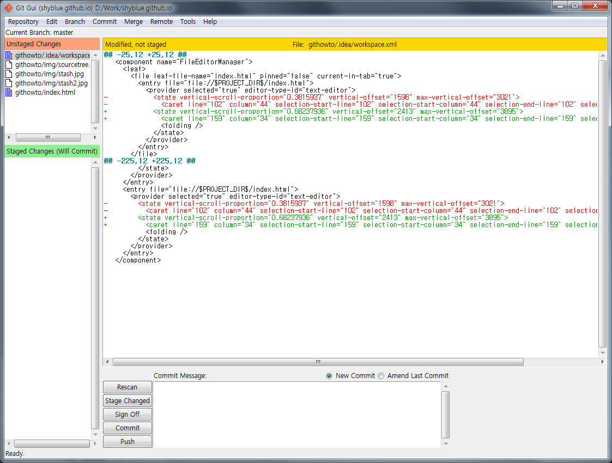
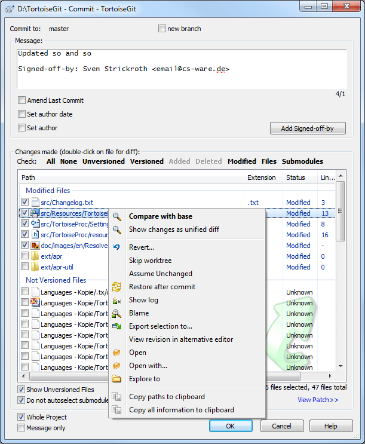
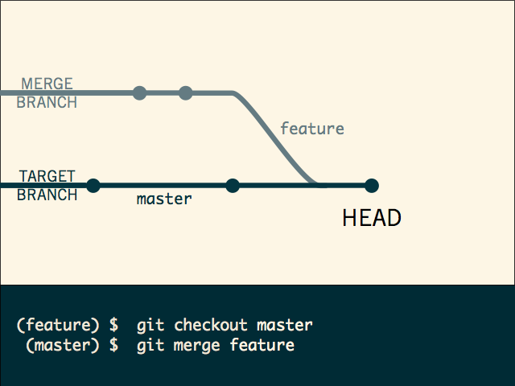
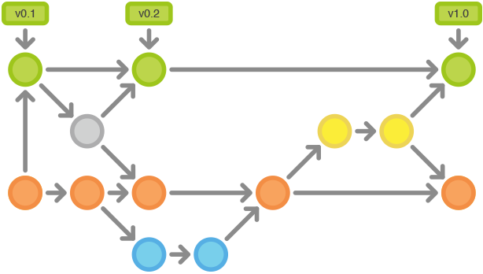

Git & git flow
via Stash
How to using git & git-flow
Ricky Jang (jcjang@hivetech.kr)
Just Do It
GIT?
Git is just one of SCM
SCM is not
always necessary
SCM by Hand & Date
Welcome to hell

Here we go, SVN

But
Use branches and tags
time goes on...
Welcome to hell, Again
Hell named Merge
Now GIT
If you just do git
then, you feel
Git is really cool!

Git with Stash
Stash?
Atlassian Stash
Repository solution of Atlassian
like Github
Git GUI Clients
1. [Git for Windows](http://msysgit.github.io/)
2 [GitHub windows](https://windows.github.com/)
3. [SourceTreeApp](http://www.sourcetreeapp.com/)
4. [TortoiseGit](https://code.google.com/p/tortoisegit/)
Let's begin
Configure Git
User setting
$ git config --global user.name "Your Name"
$ git config --global user.email "account@hivetech.kr"
Working with your repository
Start
Clone from repository
$ git clone ssh://git@git.mit.corp-apps.com:7999/REPOURI
Existing code
$ cd existing-project
$ git init
$ git add --all
$ git commit -m "Initial Commit"
$ git remote add origin ssh://git@git.mit.corp-apps.com:7999/~jcjang/log4cxx.git
$ git push origin master
Code is already tracked by git
$ cd existing-project
$ git remote set-url origin ssh://git@git.mit.corp-apps.com:7999/REPOURI
$ git push origin master
Learn about GIT
Local vs Remote

Confusing : Staging

Comit & Push
Pull & merge
Branch & Merge
Checkout & Reset
Most important thing is
Policy
Git flow
Git flow is successful branch model with git
Every thing is start from this picture
How git flow works
Master
Keep master clean and just use for tagging.
Master is history of release.
Develop
Develop on develop branch but always keep buildable and usable.
Historical Branches

Feature
Add new features on feature branch apply it to develop when feature finish.
Feature branches

Release
Use release to bump up version & fix bugs for Release candidates.
Release Branches

Hotfix
Fix release bug on hotfix & apply it to master and develop when hotfix finish
Maintenance Branches

Commands